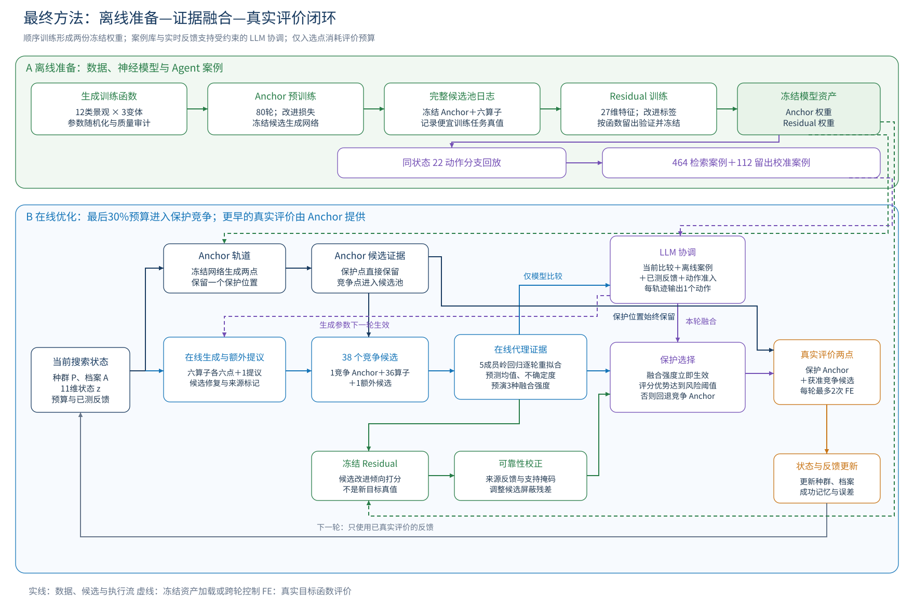
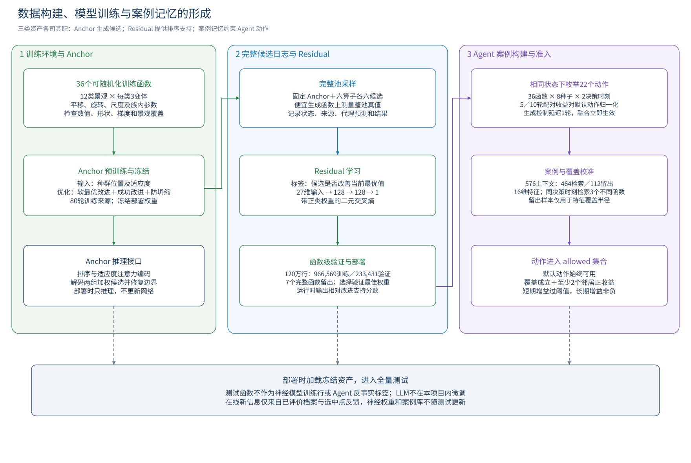
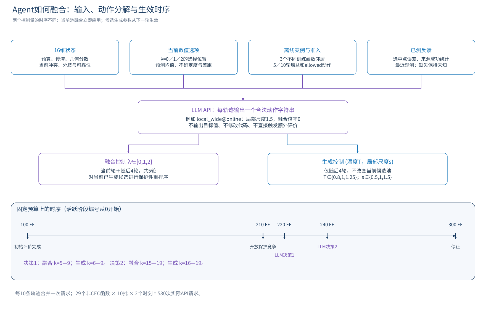
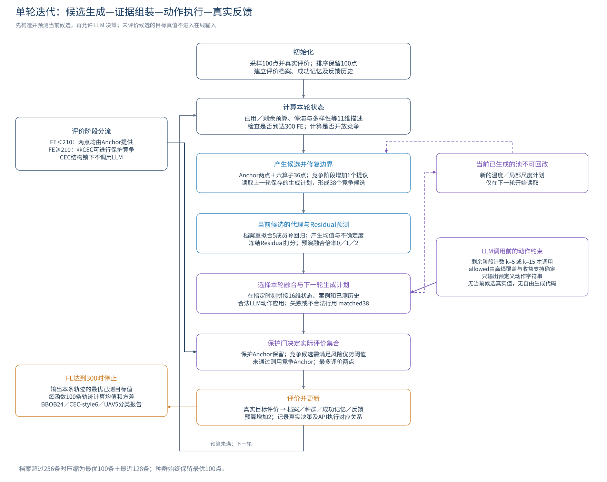

1 方法定位与最终配置
最终方法面向有限评价预算下的连续黑盒最小化：在生成候选之后，综合当前任务的代理预测、跨任务训练获得的改进支持以及真实观测形成的可靠性信息，由受约束的 LLM 协调生成参数与融合强度，最终通过保护门决定竞争评价点；始终保留一个 Anchor 评价位置。
整个流程分为离线资产准备和在线优化两阶段。离线依次形成训练环境、冻结 Anchor、完整候选池日志、冻结 Residual，以及 Agent 使用的案例记忆；在线只重新拟合轻量代理和更新已测统计，不反向训练 Anchor、Residual 或 LLM。
本说明对应已完成全量验证的 Full 配置，策略标识为 r10_current_pool_fusion_delayed_generation_v1。当前工作区算法源码与冻结绑定中的36个文件哈希一致，案例记忆哈希一致；这次工作只整理文档与图形。流程图的布局逻辑参考所提供论文图2，全部模块操作与时序以本项目可核验代码和记录为准。

图1 最终方法的离线准备与在线证据融合闭环。；点击打开矢量PDF。| 项目 | 最终配置 |
|---|
| 目标 | 最小化最终已真实评价的目标值 |
| 测试问题 | BBOB24、CEC-style6、UAV5，均D10 |
| 种群与预算 | 种群100；每轨迹300 FE，含初始100 FE |
| 每轮实际评价 | 通常2点：保护Anchor＋竞争位置；预算边界最多1点 |
| 候选规模 | 六算子×六点=36；保护竞争阶段共39个待检候选，其中38个参与竞争 |
| 冻结资产 | Anchor权重、Residual权重、464条Agent检索案例及覆盖半径 |
| 在线适配 | 5成员岭回归代理重拟合；已测反馈与来源成功记忆更新 |
| LLM决策时刻 | 活跃阶段k=5、15；对应决策前FE=220、240 |
| 控制时长 | 融合立即生效5轮；生成参数下一轮起生效4轮 |
2 数据集如何构建
训练环境由36个可随机化函数入口构成，每类景观设置3个变体，共12类。函数接口接收批量候选张量并返回对应适应度；实例通过平移、旋转、尺度和族内参数随机化产生，从而让网络学习跨实例的搜索行为。候选位置由训练环境边界约束，当前生成函数采用[-5,5]定义域及D10采样。
| 景观族 | 三个函数入口 |
|---|
| 径向基／多漏斗 | rbf_sparse、rbf_dense、rbf_deceptive |
| 平台 | plateau_soft、plateau_sharp、plateau_tilted |
| 谷地 | valley_smooth、valley_wavy、valley_narrow |
| 组合 | comp_local、comp_global、comp_rugged |
| Fourier周期 | fourier_low、fourier_mid、fourier_mixed |
| 低秩 | lowrank_soft、lowrank_tanh、lowrank_wave |
| 环状 | ring_single、ring_double、ring_wavy |
| 螺旋角向 | spiral_soft、spiral_strong、spiral_decay |
| 鞍点混合曲率 | saddle_soft、saddle_wave、saddle_tilt |
| 多尺度 | multiscale_smooth、multiscale_hard、multiscale_coupled |
| 方向脊 | dirridge_single、dirridge_multi、dirridge_noisy |
| 局部波包 | wavepacket_local、wavepacket_multi、wavepacket_drift |
构建时检查批量形状、有限输出、可微性及有限非零梯度，并计算探索性景观分析（ELA）特征。参考景观只参与距离诊断，不作为训练任务或候选真值训练行。生成、审计与族平衡的设计记录为420个候选景观、150个筛后候选、最终12×3个入口；当前运行资产可直接核验的是冻结的36入口文件与审计报告。
审计信息需要保持其实际含义：所附本地审计记录同时列有15条SAFE、11条USABLE和10条DROP_ELA，而selected_fids仍包含36个入口，因此不能将这份记录写成“36个入口全部达到同一ELA距离阈值”的证明；最终使用哪36个函数由冻结入口及权重来源清单确定。该诊断说明不改变已冻结训练资产。
训练任务与测试任务在用途上分开：生成函数用于预训练、Residual标签和Agent反事实收益；BBOB、CEC-style与UAV用于最终评价。七个生成函数整函数留出用于Residual验证与案例覆盖校准；它们仍可能属于Anchor的36函数预训练来源，因此这里检验的是下游模块的函数级泛化，不能表述为整套方法对这七个景观从未见过。
3 Anchor 如何训练、冻结并生成候选
Anchor的输入是按适应度排序的种群位置及对应适应度。网络将适应度映射成注意力信号，与可学习的秩注意力共同聚合种群；前馈网络产生种群编码，再由解码器为两个输出通道分别分配权重，对编码后的点进行加权组合并修复边界，得到两个候选点。
预训练来源记录明确为上述36函数上的80轮训练。训练目标包含三部分：软最优候选相对父代的改进、优质候选超过父代最优值的平滑成功损失、以及候选距离低于目标分散程度时的防坍缩惩罚。适应度经标准化后比较，以减弱不同训练景观数值尺度的影响。选择训练表现最佳的权重作为部署资产，随后关闭梯度更新。
部署时Anchor只做前向推理：第一候选固定占据保护评价位置，第二候选作为竞争位置的回退点。二者均保持可用；Agent调整温度时产生的是额外Anchor变体，不覆盖这两个基础候选。温度作用于解码权重的集中程度，不等价于控制空间搜索半径。
本轮完整实验直接加载可核验的冻结权重，没有执行80轮预训练。80轮与训练目标由训练来源记录和方法描述支持；训练来源中未被完整绑定的学习率、批量大小等设置，不作为本轮新增实测事实。
4 完整候选池日志与 Residual 训练
先固定Anchor，再在便宜生成环境上运行Anchor与六个运行时算子，在每个搜索状态保存完整候选池。训练期可以对所有候选计算目标值，因而能记录那些在线运行时不会被选中的候选结果；这些训练调用不计入测试轨迹的300 FE预算。
一条日志包括函数及实例标识、预算与状态、候选所属算子、代理评分/均值/不确定度、生成前最优及最差适应度、候选真值、Anchor结果等。部署权重使用的标签为 improved_best：候选目标值小于生成前当前最优值时记1，否则记0；部署检查显示 include_baseline=False，训练行不包含Anchor候选。
Residual输入共27维：20项数值特征（预算/停滞、候选标记、代理统计、种群边界适应度及11维状态）加7项来源one-hot。数值特征用训练子集均值与标准差归一化；验证特征使用同一变换。模型为27→128→128→1的MLP，含LayerNorm和GELU，输出经Sigmoid变为改进支持分数。
训练采用带正类权重的二元交叉熵和AdamW，按完整函数划分验证集，并以头部排序指标与验证损失的组合选取权重。冻结指标文件记录：总计1,200,000行，966,569训练、233,431验证；训练与验证正例率约12.09%和10.70%。保存的最佳轮为第1轮，训练历史共记录61轮；部署的是验证选择的权重，而不是训练历史的最后一轮。
Residual分数表达候选在训练分布下改善当前最优值的相对支持，不是经过校准的测试成功概率；运行时其参数不更新。完整池采样设计记录为324万候选行，最终用于训练的120万行规模及部署特征可由权重和指标文件直接核验。

图2 数据、两份神经模型权重与Agent案例记忆的形成过程。；点击打开矢量PDF。5 Agent 的离线案例怎样构建
案例记忆是独立的数据资产，不是第三个神经网络。固定Anchor、Residual与数值选择流程，在36个生成函数上使用8个种子；初始种群围绕首点分别按1、1、0.3、0.3、0.1、0.1、0.03、0.03缩放，覆盖从分散到收缩的状态。每条采样轨迹在活跃阶段k=5和15建立决策上下文。
对于每个上下文，以相同初始种群、相同随机流和相同决策前缀枚举22个动作，与默认 matched38 动作做分支比较。评价未来5轮和10轮内的最好目标值；用决策前已评价目标的标准差归一化，收益为“默认分支最好值减动作分支最好值”除以该尺度，正值表示动作分支更优。
时序与部署一致：融合倍率作用于当前轮和随后4轮，生成参数只作用于下一轮起的4轮。k=15的前序状态还包含预先固定的较早动作，使案例不只覆盖一直默认的轨迹。采样时对候选额外测量的诊断结果仅用于离线分析，不进入在线LLM输入。
共形成36×8×2=576个上下文，其中29个函数的464条保留为检索案例，7个留出函数的112条只校准覆盖范围。该轮采集记录的训练环境原生评价量为1,665,135次，真实LLM调用为0；案例采集不等于LLM微调。
| 资产 | 保存内容与用途 |
|---|
| 案例特征 | 16维状态，包含当前候选的冲突、融合选择分歧、尺度化不确定度与历史可靠性 |
| 动作结果 | 22动作的5轮/10轮归一化收益 |
| 检索约束 | 只检索同一决策时刻；取3个不同训练函数的最近案例 |
| 覆盖校准 | 训练特征标准差下限0.05；留出样本第三近函数距离的95%分位数 |
| Full覆盖半径 | k=5：0.712454133101129；k=15：0.6101047169878062 |
| 动作准入 | 默认始终可用；其余动作需覆盖、至少2邻居正收益、短期加权收益超过max(0,0.25×离散度)，且长期收益非负 |
6 搜索状态与六类算子的接入
在线每轮首先由当前种群、评价档案和预算计算11维状态：最优值标准化位置、适应度跨度、前两名间隔、种群多样性、精英多样性、质心偏移、剩余比例、已用比例、停滞、档案压力、维度尺度。状态编码与成功记忆产生算子先验，用于后续评分；每个算子仍固定生成6点，不通过先验改变产点数量。
| 算子 | 输入及具体生成操作 |
|---|
| Amortized elite | 位置、适应度特征与状态进入父代权重网络；加权精英混合当前最优，再叠加尺度化随机扰动 |
| Current-to-pbest | 从当前种群采样父点、精英pbest及两个差分点，用向精英移动与差分项构造候选 |
| Covariance elite | 使用前约20%精英的中心化方向、秩加权噪声和对角噪声构造协方差感知扰动 |
| Trust region | 围绕当前最优点，用精英标准差、边界宽度、剩余预算与停滞控制局部扰动 |
| Coordinate pattern | 从精英选择中心，构造稀疏坐标掩码及正负步长，保证至少有一个坐标扰动 |
| Opposition restart | 以边界中心作对向映射并加入随机噪声，提供远离局部区域的重启提议 |
六算子共同构成36点池；每个点都进行边界修复并记录来源。算子库不额外加载一份预训练权重；其中神经形态的生成网络也不能直接等同于单独训练完成的第三份模型。运行期没有对这些模块进行梯度训练。
在保护竞争阶段，Anchor产生2点，算子池产生36点，再增加1个提议：温度为1时使用原生信赖域额外点，非默认温度时使用Anchor温度变体。共39个待检查候选中，第一Anchor单独保留，另外38点参与竞争；名称 matched38 指的正是竞争池宽度，不是每轮真实评价次数。
局部尺度控制只缩放Trust region与Coordinate pattern各自后3个候选的位移，保留中心与已抽取的方向，其余候选不受该局部尺度调整；温度仅改变额外Anchor变体。扩展候选不增加每轮最多2次的真实评价预算。
7 在线代理如何学习当前任务
代理只使用已经真实评价的档案。每轮重新求解五个随机特征岭回归模型，输入位置按边界归一化，目标值按当前档案均值及标准差归一化。D10时每个成员的特征由常数项、10维位置、10维平方项和40个随机傅里叶特征组成，共61维；岭正则系数为0.002。
每个成员求解 (Φ^TΦ+αI)β=Φ^Ty，再还原目标尺度；五个预测的均值作为μ，成员间总体标准差构成不确定度，并可加入离档案最近距离的弱补偿。矩阵求解异常时采用伪逆。这里的μ与σ都是模型预测，不能当作当前未评价候选的真实目标值或校准置信区间。
基础分数越低越好，其形式为 μ-κσ有效＋步长/信任惩罚-档案新颖性奖励-算子先验奖励。κ基值为1.25，当前配置将不确定度项弱化为0.25倍；针对任务类别还有已冻结的局部偏置与守护项。代理拟合和打分不调用目标函数。
8 Residual、来源可靠性与融合分数
对当前候选构造Residual输入，得到相对改进支持。先在支持的候选集合内进行均值/标准差归一化并截断到[-2.5,2.5]；额外Anchor温度变体，以及经局部尺度修改的六个候选，不直接套用其分布外Residual校正，这些点的支持掩码设为0。
最近已评价反馈用于维护每个来源的Residual排序正确率与代理误差。没有观测时，Residual可靠性使用2/4的平滑先验；只对已测且可比较的保护点与竞争点计算排序是否正确。预测误差经尺度化，缺失记录保持未知。
候选融合分数可写为 Aλ = Aonline - λ·η·sd(A)·z支持·(2r来源) ＋0.02·sd(A)·重复惩罚＋0.02·sd(A)·来源误差，其中η=0.008，λ取0、1或2。重复惩罚来自与保护Anchor过近的程度；来源误差与可靠性只由已选中点的反馈估计，存在选择偏差，不是对全池效果的无偏统计。
λ=0表示这次融合排序不加入Residual校正，λ=1为默认校正，λ=2加强支持内的Residual项；λ=0并不关闭生成模块或整个Agent。每种倍率都先经过相同的保护选择规则，形成可供LLM比较的数值选项。
9 LLM 的输入、输出及动作空间
| 输入组 | 具体内容 |
|---|
| 16维状态 | 8项预算/几何/反馈特征，加8项当前冲突、选点分歧、不确定度、Residual跨度、在线间隔、秩相关、已测排序正确率与样本比例 |
| 当前融合选项 | 倍率0/1/2的保护后位置、未保护位置、预测均值相对当前最优、归一化σ、相对Anchor的评分间隔及是否改点 |
| 离线证据 | 最近3个不同训练函数；22动作的短期/长期收益、离散度、正收益邻居数、覆盖信息 |
| 已测历史 | 近期选中点观测、来源统计、误差和保留情况；不把观察到的进展当作因果动作奖励 |
| 动作约束 | 每轨迹allowed集合、默认/失败回退动作、当前融合5轮及后续生成4轮的约定 |
LLM只为每个轨迹标识输出一个allowed动作字符串，例如 {"actions":{"0":"local_wide@online","1":"matched38"}}。它不接收当前全池真值，不负责生成任意新坐标，不生成算子代码，不修改保护门或评价预算，也不在测试期间微调。运行记录中的配置模型为deepseek-v4-flash；通过实际配置的API调用，禁止把仅检索或模拟响应表述成真实LLM实验。
| 生成配置 | 温度T | 局部尺度s | 选择含义 |
|---|
| matched38 | 1 | 1 | 默认协调融合 |
| release | 1 | 1 | 交还基础数值选择路径，不重置已行走轨迹 |
| anchor_sharp | 0.8 | 1 | 额外Anchor权重更集中 |
| anchor_soft | 1.25 | 1 | 额外Anchor权重更平缓 |
| local_fine | 1 | 0.5 | 缩小指定局部候选位移 |
| local_wide | 1 | 1.5 | 扩大指定局部候选位移 |
| joint_sharp_wide | 0.8 | 1.5 | 集中温度并扩大局部位移 |
| joint_soft_fine | 1.25 | 0.5 | 平缓温度并缩小局部位移 |
除release外，7个生成配置各配λ=0/1/2，合计21个动作；release仅配λ=1，总计22个。无后缀表示λ=1，@online表示λ=0，@residual_boost表示λ=2。先由案例准入决定哪些动作可用，LLM只能在该集合中选取。
API只接受完整结束的最终JSON内容；检查重复键、未知轨迹、动作名称及逐轨迹准入。批量响应部分合法时仅执行合法行，不合法或缺失行回退matched38；截断或请求级结构错误导致该请求回退。失败不自动重试；默认动作的有效返回也属于合法响应，但不等于实际干预发生。

图4 Agent的输入输出、动作分解和预算时序。；点击打开矢量PDF。10 两层门控与真实评价的授权
第一层是动作准入门：它检验当前状态是否受到离线案例支持，决定LLM可以选哪些配置；它不直接决定评价哪个点。第二层是候选保护门：在当前分数下，将拟选竞争候选与竞争Anchor比较，只有优势达到按档案尺度归一化的风险边际才放行。
协调融合使用的风险边际为 m=0.06+0.02·e，其中e为近期已测代理误差均值并截断到2。保护规则要求候选分数小于竞争Anchor分数减m·sd(A)，否则返回竞争Anchor。该协调路径以online_only=True调用保护函数，Residual已经通过校正分数进入，不再重复执行独立Residual否决；不得把它描述成又额外通过一次Residual概率阈值。
第一Anchor评价位置不由LLM替换；保护门仅控制第二个竞争位置。CEC-style结构锁下竞争位置也由Anchor提供，LLM不介入。案例覆盖不足时仍保留默认动作；默认动作并不表示整个候选扩展与数值融合流程都被关闭。
11 从初始种群到终止的迭代闭环
步骤1：在任务边界内采样100个初始点并评价，按真实适应度排序，建立种群P与已评价档案A，设置已用预算N=100，清空停滞、来源成功记忆与Agent历史。
步骤2：当N<300时计算remaining=(300-N)/300、used=N/300及11维状态，读取上一轮保存的生成计划。生成六算子候选与Anchor候选，修复边界；如果进入允许竞争的阶段，再构造额外提议并将竞争池扩展为38点。
步骤3：用当前档案拟合在线代理，推理冻结Residual，计算支持掩码、来源可靠性和三种倍率下的数值选择；全部依据模型预测与已经评价的历史完成，不查询未选中测试候选的真实值。
步骤4：N<210时两个实际评价位置均由Anchor提供；N≥210且非CEC时开放竞争，活跃阶段编号从k=0开始。只在k=5、15调用LLM，分别在评价前FE=220、240；其余轮沿用窗口内动作或交还基础选择路径，不追加API请求。早期内部仍可能生成和打分候选，但它们不会因此获得真实评价。
步骤5：LLM返回动作后，融合倍率立即用于当前池并持续至随后4轮，温度和局部尺度只从下一轮起持续4轮；不能宣称新生成配置已经改变当前池。两次窗口分别为融合k=5—9与15—19、生成k=6—9与16—19。
步骤6：保留保护Anchor，用保护门确定竞争点，实际评价两点；若仅剩一个预算位置则只评价Anchor。评价结果用于更新最优值、候选是否进入保留种群、代理误差、来源排序可靠性及记录。每条轨迹最多100个外层迭代：100+100×2=300 FE。
步骤7：把新评价点追加到档案；超过256条时保留最优100条和最近128条，不额外进行去重。种群由旧种群与新点合并后按真实适应度排序，始终保留最优100点。算子成功记忆按改善最优+1、仅进入种群+0.25、否则-0.05更新，并乘0.86衰减、截断到[-2,3]。重新计算停滞和状态进入下一轮。
步骤8：预算达到300立即停止，输出这条轨迹已评价点中的最小目标值、过程最优曲线、评价记录与决策记录。评价档案的压缩不删除已单独归档的真实评价日志；最终统计来自100条轨迹终值，均值及总体方差按N=100计算。

图3 初始化、单轮决策、真实评价、反馈更新与预算终止。；点击打开矢量PDF。12 全量实验如何组织
测试按BBOB24、CEC-style6和UAV5分类，每个函数100条轨迹，以10批、每批10条组织，全部D10及300 FE。BBOB包含完整24个函数；其中f20具有每次随机符号和跨批求和的实现特性，因此固定批次形状与随机状态，并在解释结果时保留批次耦合限制，不设置独立比较表。
不同实验条件保持相同初始种群和受控求解器随机流；随机流、评价请求形状与坐标均参与核验。完整Full的神经权重、案例库、动作门限和预算提前冻结，测试过程中不根据测试效果更改门限。
| 实验条件 | 具体操作 |
|---|
| Full | Anchor、六在线生成算子、在线代理、Residual及受约束LLM全部启用；CEC保留结构锁 |
| 移除Anchor | 移除预训练Anchor网络及其候选生成路径，将保护与竞争两个位置以原生信赖域候选补位，保留候选数量和其他模块，Anchor温度控制失效 |
| 移除在线生成算子 | 删除六个运行时生成算子及额外原生提议，保留Anchor、在线代理、Residual、Agent和冻结案例门；本轮全部allowed仅默认，Agent实际改点0 |
| 移除Agent | 移除LLM、案例检索、Agent门控与历史、参数控制、额外提议和重排序，保留Anchor、六算子、在线代理及Residual |
Full的非CEC任务共有29个函数×10批×2个决策时刻=580次真实API请求，包含389次全有效、2次部分有效、189次失败；有效动作行3,908，回退行1,892。5,800个决策上下文中4,518个只开放默认、1,282个允许多个动作，实际执行835行非默认动作；这些计数用于说明运行事实，不把有效API返回等同于优化改进。
Full记录输入8,340,152 tokens、输出177,461 tokens；供应商已返回credit字段合计243.81，仅覆盖391条响应，不推断币种或完整账单金额。目标评价共1,050,000次逻辑FE，其中66,430次原生调用、983,570次精确缓存命中；缓存身份与随机状态检查保证复用含义，缓存不替代真实LLM调用。
13 硬件执行与信息流边界
求解器、Anchor推理、Residual推理、生成与随机流控制在CPU侧；最多24个独立任务工作进程，每进程1个数值线程。共享CUDA服务承担批量岭回归代理计算，批量不足2时保留CPU路径，GPU并发2；使用float32，关闭TF32。单条轨迹的迭代顺序不因任务并行而改变。
LLM API并发2，配置超时90秒，最大输出1024 tokens。进度日志记录阶段、已完成函数/批次、原生与缓存评价、API执行和硬件使用。数据侧只允许已评价反馈回流：候选生成、代理拟合、Residual推理、LLM动作选择本身不增加真实目标FE；只有保护评价集合中的点调用目标函数。
| 模块 | 输入 | 操作 | 输出／是否耗目标FE |
|---|
| Anchor | 排序种群、适应度 | 冻结注意力生成 | 2个候选；否 |
| 六算子 | 种群、11维状态、成功先验 | 固定每算子6点，边界修复 | 36候选＋来源；否 |
| 在线代理 | 已评价档案、当前候选 | 5成员岭回归重拟合 | μ、σ、代理分数；否 |
| Residual | 候选27维特征 | 冻结MLP、支持掩码与可靠性校正 | 相对改进支持；否 |
| 案例准入 | 16维状态、同决策时刻案例 | 3个不同函数邻居、覆盖与收益门 | allowed动作；否 |
| LLM协调 | 当前选项、离线证据、已测反馈 | 在allowed中选一个动作 | 生成计划＋融合倍率；否 |
| 保护选择 | 融合分数、竞争Anchor与风险边际 | 保留保护位置，阈值决定第二点 | 最多2个待评价点；否 |
| 目标评价 | 实际获准的候选坐标 | 调用任务目标函数 | 新真值；是 |
| 状态更新 | 已测新点与来源 | 更新档案、最优种群、误差和成功记忆 | 下一轮状态；否 |
14 可直接使用的方法叙述
本方法首先构建包含12类景观、每类3个变体的36函数训练环境，通过随机化平移、旋转及族内参数形成多样实例，并记录数值和景观质量诊断；随后在该环境中训练并冻结Anchor候选生成网络，再利用冻结Anchor与六类运行时算子采集完整候选池及其真实结果，训练用于判断候选能否改善当前最优值的Residual模型，并通过函数级验证选择冻结权重；在同一生成环境中，进一步构造配对动作分支和短长期收益案例，形成Agent的离线检索证据与动作准入规则。
在线优化从100个初始真实评价开始，每轮由Anchor和六类互补算子产生候选，使用当前评价档案重新拟合轻量在线代理，并结合冻结Residual及已测来源可靠性形成候选融合分数；在预算后30%的两个指定时刻，LLM依据当前候选数值比较、离线案例及已测反馈，从准入动作中联合选择融合强度和后续生成参数，其中融合立即生效、生成控制延后一轮；保护选择始终保留一个Anchor评价位置，并只在竞争候选满足风险优势条件时允许其进入第二个评价位置，随后将真实结果回流到种群、档案、来源成功记忆和Agent反馈，循环直至300次评价预算用尽。
附录 文件与可核验来源
| 内容 | 来源 |
|---|
| 流程图参考 | 所提供PDF第4页图2；第2—5页方法描述 |
| 训练函数入口 | experiments/r02_fusion_agent/training_assets/generated36_curated.py |
| 权重训练来源 | experiments/r02_fusion_agent/training_assets/checkpoint_provenance.md |
| 资产清单 | experiments/r02_fusion_agent/training_assets/manifest.json |
| Anchor推理 | roopf/anchor_backbone.py |
| 搜索循环与代理 | roopf/model.py |
| 数值保护规则 | roopf/fusion_rules.py |
| 生成参数与反馈 | roopf/joint_generation_agent.py |
| 融合动作定义 | roopf/evidence_fusion_agent.py |
| Agent输入、案例准入及时序 | roopf/current_evidence_agent.py |
| 实际API输出校验 | roopf/policy_api_r10.py |
| 案例采集 | scripts/collect_r10.py |
| 最终配置与绑定 | experiments/r10_current_candidate_fusion/PROTOCOL.json、CODE_BINDING.json |
| 案例构建记录 | experiments/r10_current_candidate_fusion/COLLECTION_SUMMARY.json |
| 实际执行记录 | experiments/r10_current_candidate_fusion/FINAL_RESULT.json、POSTRUN_ANALYSIS.json |
| 硬件后端 | scripts/run_r10_hardware.py、scripts/hardware_backend.py |
| 实验三项消融 | roopf/no_anchor_ablation.py、roopf/strict_component_ablations.py |
权重身份：Anchor SHA256 a265d448ad4a2d191eed23dafa36e03e9475a7b95e824bb04d9a88715031a06d；Residual SHA256 42bac7c6792b6980ad149eff08ce4b2d93ce3ffba51d3d869dc0d1625b3a9d01。更详细的全部源码身份、案例哈希、流程材料校验值见同目录“最终版本确认.json”。